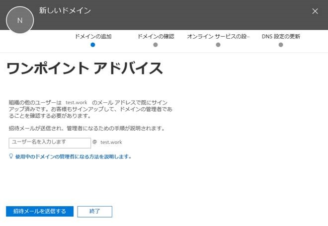
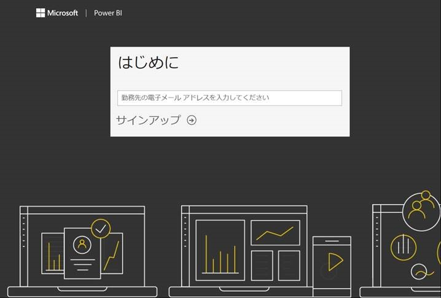
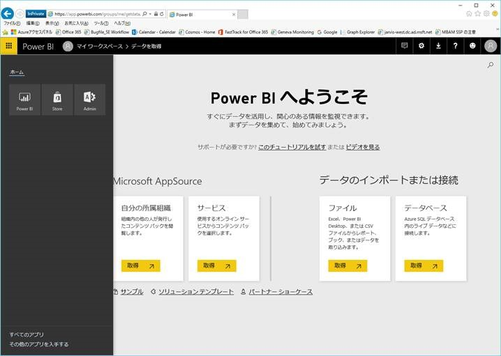
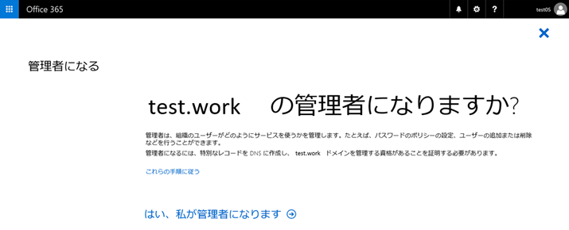

こんにちは。いつも Office 365 を利用いただきまして、ありがとうございます。
Office 365 にカスタムドメイン登録しようとしたときに、「ワンポイント アドバイス」といったメッセージが表示されることがあります。
多くのお客様よりお問い合わせをいただきますので、今回は、このときの対象方法についてご紹介いたします。
※画面は、2017 年 9 月時点のものです。
{kind=link}

原因
上記メッセージが表示される場合、登録しようとしているドメインのメールアドレスを使用しているユーザーによって、
「セルフサービス サインアップ」が実施されたことにより、管理者が不在の Office 365 テナント（非管理テナント）が存在している状況となります。
セルフサービス サインアップ（Self Service Sign-up）とは、ユーザーがクラウド サービスを使用するためにメールアドレスを入力してサインアップすることができ、
電子メール ドメインに基づいたユーザー ID が、そのドメインに紐づく Office 365 テナントにて自動作成される機能です。
当該機能および対応している Office 365 サービスについて記述している公開情報がございますので、下記にご紹介いたします。
Azure のセルフサービス サインアップについて
https://docs.microsoft.com/ja-jp/azure/active-directory/active-directory-self-service-signup
組織でのセルフサービス サインアップの使用
https://support.office.com/ja-jp/article/4f8712ff-9346-4c6c-bb63-a21ad7a62cbd
対処方法
「セルフサービス サインアップ」によって作成された非管理テナントからドメインを切り離し、管理テナントに登録し直す必要があります。
具体的には下記の作業を行います。
（作業ドメイン：test.work、非管理テナント：testwork.onmicrosoft.com、管理テナント：contoso.onmicrosoft.com とします）
- test.work のメールアドレスを使用しているユーザー（admin@test.work）を使用して、セルフサービス サインアップを行います。
個人として Power BI にサインアップする
https://powerbi.microsoft.com/ja-jp/documentation/powerbi-service-self-service-signup-for-power-bi/
> こちらは、PoweBI にセルフサービス サインアップする手順になりますが、対応しているサービスであれば、どれでも問題ありません。
{kind=link}

- PoweBI の画面にて左上のワッフル メニューをクリックし、「Admin」をクリックします。
{kind=link}

- 「管理者になる」メニューを実行します。 ※途中、TXT もしくは MX レコードによるドメインの所有確認が必要です。
{kind=link}

- Office 365 管理センターにて、新規の全体管理者（admin@testwork.onmicrosoft.com）を作成します。
Office 365 にユーザーを個別に、またはまとめて追加する - 管理者向けヘルプ
https://support.office.com/ja-jp/article/1970f7d6-03b5-442f-b385-5880b9c256ec
- 登録済のユーザーを確認し、UPN を @test.work から @testwork.onmicrosoft.com に変更もしくは、ユーザーの削除を行います。
※UPN を変更するには、admin@testwork.onmicrosoft.com ユーザーにて Office 365 へ PowerShell 接続し、
下記のコマンドを実行します。
Set-MsolUserPrincipalName -UserPrincipalName username@test.work -NewUserPrincipalName username@testwork.onmicrosoft.com
- 参考情報
Office 365 PowerShell への接続
https://docs.microsoft.com/ja-jp/office365/enterprise/powershell/connect-to-office-365-powershell
- 非管理テナント：testwork.onmicrosoft.com に紐づくドメインを削除します。
Office 365 からドメインを削除する
https://support.office.com/ja-jp/article/f09696b2-8c29-4588-a08b-b333da19810c
- 管理テナント：contoso.onmicrosoft.com に test.work ドメインを登録します。
Office 365 に複数のドメインを追加する
https://support.office.com/ja-jp/article/2d2fa996-b760-411d-a5cc-190d63f13207
今後も Office 365 サービスに関する有益な情報を発信してまいりますので、弊社サポート ブログをよろしくお願いいたします。